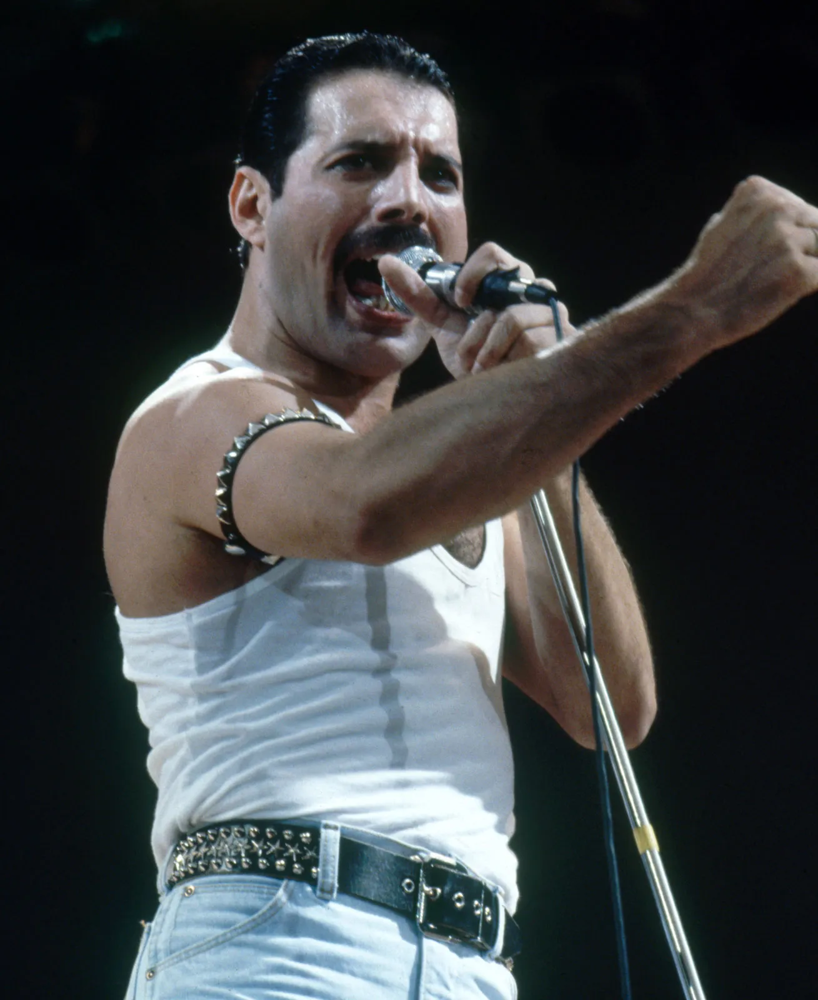

-
Freddie Mercury
Freddie Mercury was a British singer, songwriter, and the lead vocalist of the rock band Queen. Known for his powerful voice and flamboyant stage presence, he became one of the greatest performers in the history of rock music.
-
Jimi Hendrix
Jimi Hendrix was an American rock guitarist, singer, and songwriter. Widely regarded as one of the most influential electric guitarists in the history of popular music, his music and performances continue to inspire generations of musicians.
-
Amy Winehouse
Amy Winehouse was an English singer and songwriter known for her deep, expressive contralto vocals and her eclectic mix of musical genres. Her distinctive voice and honest lyrics left a lasting impact on the music industry.